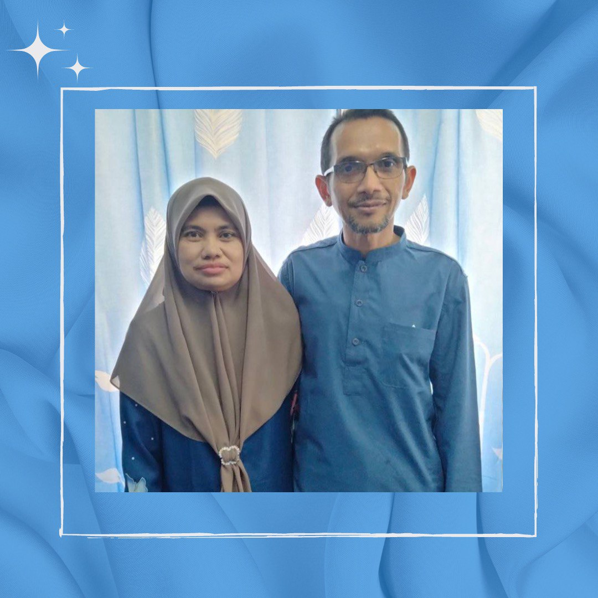

ꔫ Address : Lorong 5 Durian, Kampung Sumpitan, 33420, Lenggong,Perak
ꔫ Hobby : Listening to music
ꔫ Gender : Female
ꔫ Nationality : Malaysian
ꔫ Hobby : Listening to music
ꔫ Motto : Always stay positive
ꔫ Place that I want to go : Swizerland
The reason why I want to go to the Swizerland because I am in love with how clean and peaceful this country. I am actually a type of calm person so I do love peaceful surroundings for a piece of my mind.
.

ꔫ My lovely parents names are Ahmad Kamaruzzaman and Noridah.
ꔫ I am an only child.
.
ꔫ Here is my favourite song that I often listen to: